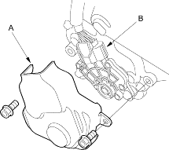
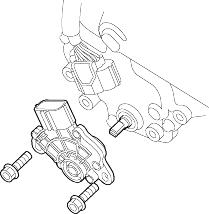
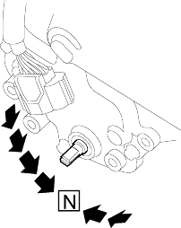
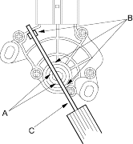

- Raise the vehicle and make sure it is securely supported (see page 1-15).
- Shift to
 position.
position. - Remove the transmission range switch cover (A).

- Disconnect the transmission range switch connector (B).
- Remove the old transmission range switch and install the new switch.

- Make sure that the control shaft is in position.
If necessary, move the shift lever to position.

- Align the cutouts (A) on the rotary-frame with the neutral positioning cutouts (B) on the transmission range switch, then put a 2.0 mm (0.08 in.) feeler gauge blade (C) in the cutouts to hold it in the position.
NOTE: Be sure to use a 2.0 mm (0.08 in.) blade or equivalent to hold the switch in the position.
